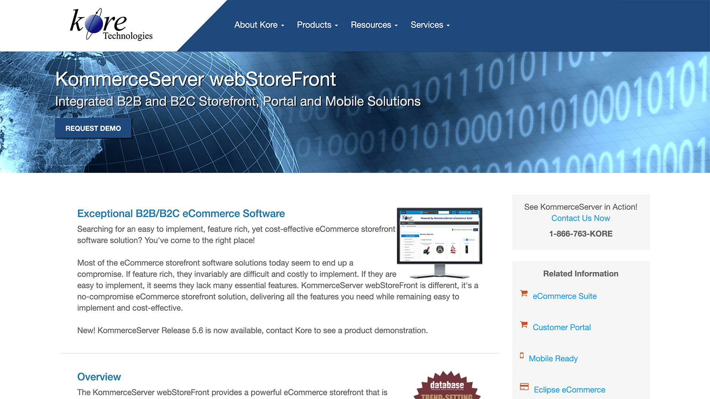

<div id="portfolio-page" class="portfolio-page-content">
    <div class="container">
        <div class="portfolio-nav">
            <div id="portfolio-close-button" class="portfolio-close-button">
                <a href="#portfolio"><i class="fa fa-close"></i></a>
            </div>
        </div>

        <div class="portfolio-title">
            <h1>Kore Technologies - Ecommerce projects</h1>
        </div>

        <div class="row">
            <div class="col-sm-7 col-md-7 portfolio-block">
                
                <div class="portfolio-page-image">
                    
                </div>
               

               
            </div>

            <div class="col-sm-5 col-md-5 portfolio-block">
                <!-- Project Description -->
                <div class="block-title">
                    <h3>Description</h3>
                </div>
                <ul class="project-general-info">
                        <i class="fa fa-user">Terry Smith @ Kore Technologies</i>
                    <li><p><i class="fa fa-globe"></i> <a href="http://www.koretech.com/kore_kommerceserver" target="_blank">Kore Technologies Ecommerce Projects</a></p></li>
                    <li><p><i class="fa fa-calendar"></i>2006 - 2013</p></li>
                </ul>

                <p class="text-justify">Working hand in hand with clients to implement and deploy custom ecom sites based on Kore Technologies highly integrated 3 tier database driven Web Base Ecommerce Business application. This would involve:
                    <ul>
                        <li>Developing and rolling into the platform new UI features using client side web technologies such as HTML, CSS, JavaScript, AJAX, and jQuery.</li>
                        <li>Handled DB requirements for new UI features when needed to create/store/update data by creating new db tables, sql data queries to sprocs.
                             </li>
                        <li>Created Business objects (business layer) to interface between the database and the UI to facilitate ecom site requirments.</li>
                        <li>Responsible for the writing and development of product installation and or implementation user guides and technical specifications for said product feature enhancements.</li>
                    </ul>
                </p>
                <p class="text-justify"></p>
                <!-- /Project Description -->

                <!-- Technology -->
                <div class="tags-block">
                    <div class="block-title">
                        <h3>Technology</h3>
                    </div>
                    <ul class="tags">
                        <li><a>HTML5</a></li>
                        <li><a>SASS</a></li>
                        <li><a>CSS3</a></li>
                        <li><a>jQuery</a></li>
                        <li><a>Ajax</a></li>
                        <li><a>C# MVC.NET</a></li>
                        <li><a>SQL</a></li>
                    </ul>
                </div>
                <!-- /Technology -->
            </div>
        </div>
    </div>
</div>
